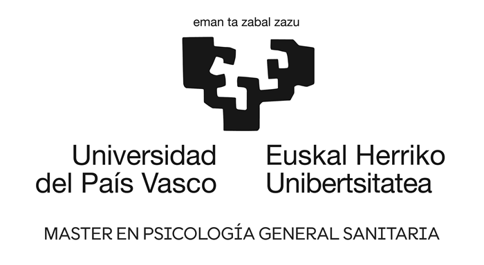
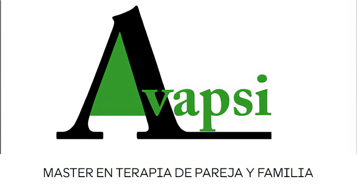

Errenteria, Gipuzkoa
Centro NutriGune
Pablo Iglesias Hiribidea
20100 Errenteria, Gipuzkoa
Errespetutik, enpatiatik eta onarpenetik laguntzen dizut. Aurrez aurreko kontsulta Errenterian eta Vitoria-Gasteizen.
Zure prozesu terapeutikoan laguntzeko eta gidatzeko nago hemen. Nire helburua elkarrekin errespetuzko eta onarpenezko gune bat sortzea da, non seguru, artatuta eta zainduta sentituko zaren.
Ikuspegi sistemiko eta integratzaile batetik lan egiten dut, harremanetan oinarrituta. Niretzat funtsezkoa da lanbidea nire balioekin bat eginez gauzatzea. Horretarako, zu zara beti nire ardatza, eta prozesua zure beharretara egokitzen eta pertsonalizatzen dut.


Errenteria, Gipuzkoa
Pablo Iglesias Hiribidea
20100 Errenteria, Gipuzkoa
Vitoria-Gasteiz, Araba
Plaza Amárica, 4, 4ºF
01005 Vitoria-Gasteiz, Araba
Bidali zure eskaera eta ahalik eta lasterren baieztatuko dut. Hitzordua onartzen denean, mezu elektroniko bat jasoko duzu.
Erreserbatu aurretik hitz egin nahi duzu? Idatzi WhatsAppez.
Beste zalantzaren bat duzu? Idatzi iezadazu.
Ez dago «oso gaizki» egon beharrik hasteko. Zerbaitek kezkatzen bazaitu, sufriarazten bazaitu edo errepikatzen dela sentitzen baduzu eta nola aldatu ez badakizu, kontsultatzeko une egokia da.
Elkar ezagutzeko lehen topaketa da: kontsultara zerk ekartzen zaituen kontatzen didazu, zalantzak argitzen ditugu eta prozesua eta helburuak nola planteatu elkarrekin baloratzen dugu.
Saioek 50-60 minutu inguru irauten dute. Hasieran astean behin edo hamabost egunean behin izan ohi dira, eta maiztasuna prozesuak aurrera egin ahala egokitzen da.
Pertsona bakoitzaren eta lantzen denaren araberakoa da. Prozesuan zehar elkarrekin berrikusiko dugu, zure beharretara egokitzeko.
Pertsona bere harremanen barruan (familia, bikotea, ingurunea) ulertzeko modu bat da. Arazoa ez da modu isolatuan begiratzen; zure historiarekin eta loturekin nola lotzen den aztertzen da.
Egokiena biak etortzea da, baina banaka ere has daiteke, beste pertsonak une horretan ezin badu edo nahi ez badu.
Bai. Saioan lantzen den guztia sekretu profesionalak eta psikologiaren kode deontologikoak babesten dute.
Abisatu gutxienez 24 ordu lehenago WhatsAppez edo zure erreserbaren estekaren bidez, eta beste tarte bat bilatuko dugu.
Idatzi iezadazu eta ahalik eta lasterren erantzungo dizut. Zerbait azkarragoa nahi baduzu, WhatsAppez ere hitz egin dezakezu nirekin.
Idatzi WhatsAppez